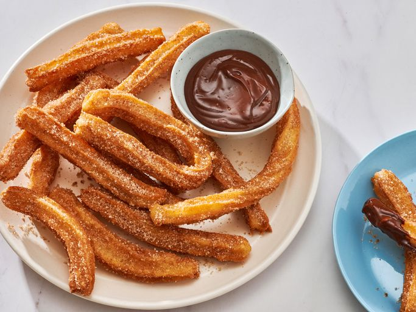

Churros

Description
A churro is a cinnamon- and sugar-topped fried pastry dough stick with Spanish and Portuguese origins. Churros
are
similar to doughnuts, but they have ridges because they are piped out of a pastry bag. Because they are fried
instead of baked, churros have a fluffy and tender interior with a satisfyingly crispy exterior.
Ingredients
- Water: This recipe for churros starts with a cup of water.
- Sugar: White sugar goes into the churro dough and into then cinnamon-sugar topping.
- Salt: A pinch of salt enhances the flavors of the other ingredients.
- Oil: You will need vegetable oil for the dought and fry the churros.
- Flour: All-purpose flour gives the churro dough structure.
- Cinnamon: The fried churros are rolled in a cinnamon-sugar mixture before serving.
Steps
- Boil water, sugar, salt, and vegetable oil. Remove from the heat, then stir in flour.
- Transfer the dough to a pastry bag and pipe into strips.
- Fry the strips in hot oil until they are golden.
- Drain the churros, then roll in cinnamon-sugar.